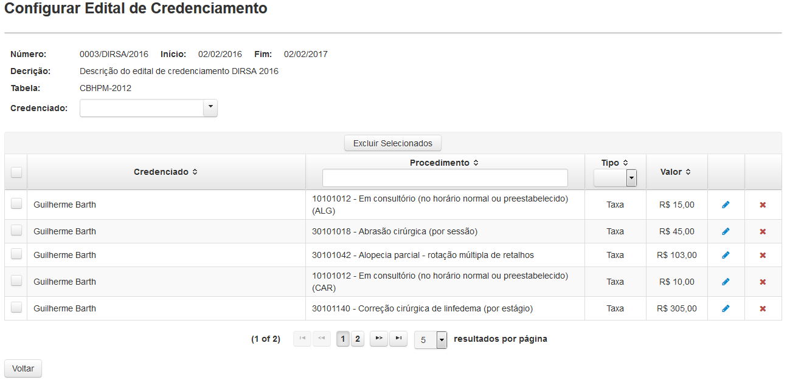

Clicando em 'Configuração' uma tela(Fig.16) onde será apresentada uma lista dos editais que estão vigentes.
É possível facilitar a busca de editais utilizando os filtros Número ou Tabela, bastando apenas clicar e digitar a palavra a ser buscada.
Fig.16 Tela 'Configurar Edital de Credenciamento'
Ao clicar no ícone Editar( ) aparecerá uma lista com todos os credenciados associados e seus respectivos procedimentos(Fig.17).
) aparecerá uma lista com todos os credenciados associados e seus respectivos procedimentos(Fig.17).

Fig.17 Tela 'Configurar Edital de Credenciamento'
Ao selecionar um credenciado no combo 'Credenciado' e clicar no botão(Vincular novo procedimento) existente nesta tela, uma subtela será aberta(Fig.18) para que os procedimentos sejam vinculados a um credenciado, por código Individual, Subgrupo ou Grupo, conforme a codificação da tabela CBHPM.

Fig.18 Tela 'Vincular procedimentos'
O ícone( ) permite definir Taxa ou Pacote para cada procedimento individualmente.
) permite definir Taxa ou Pacote para cada procedimento individualmente.
O ícone() permite excluir cada procedimento individualmente.
OBS: Caso o edital use a tabela da CISSFA a tabela de credenciado/procedimentos não exibirá valor.